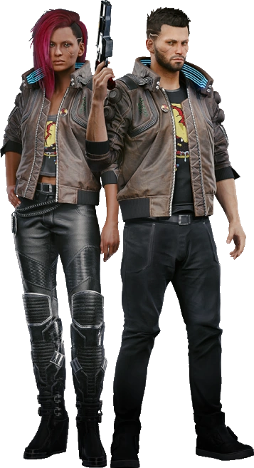
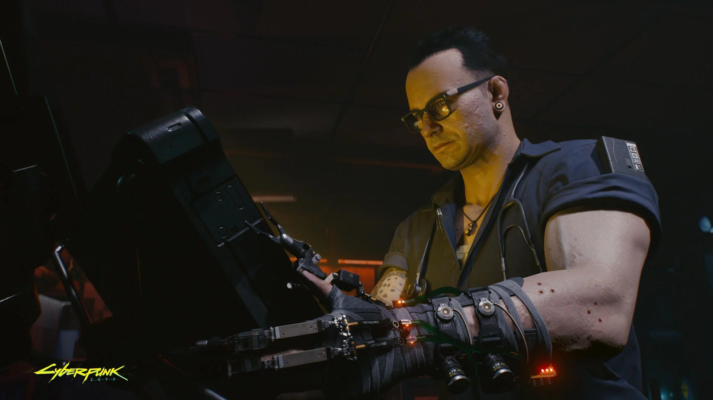
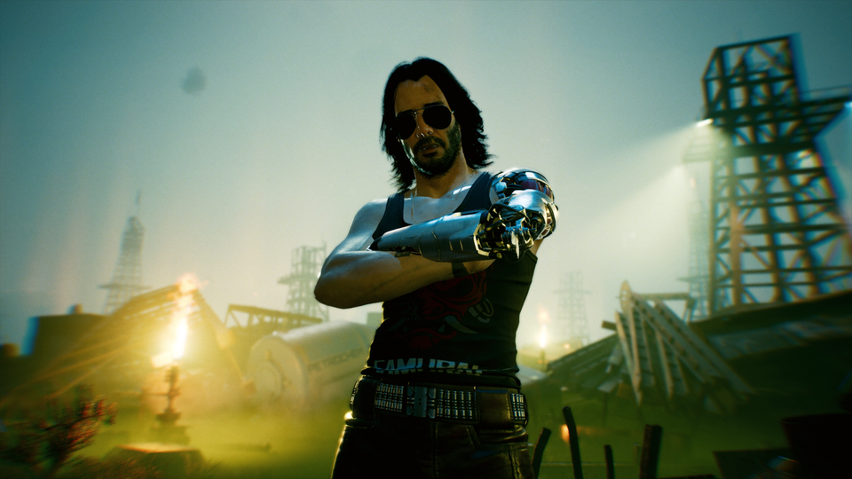
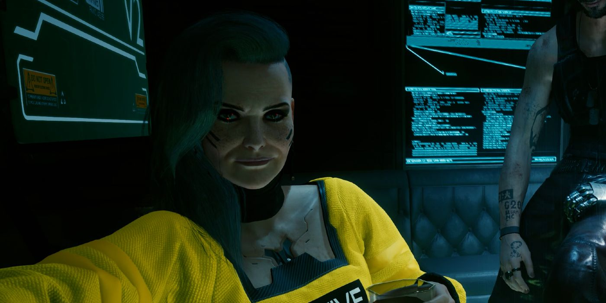
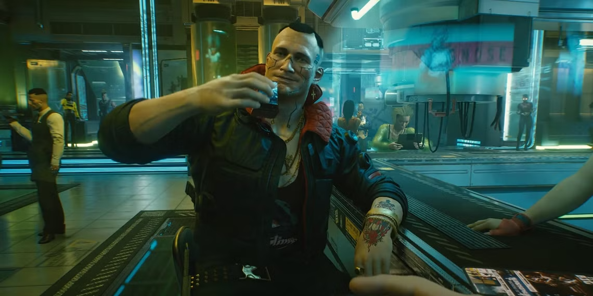
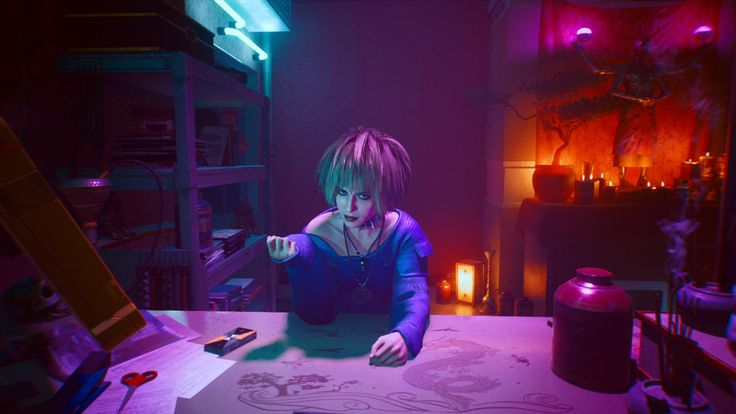
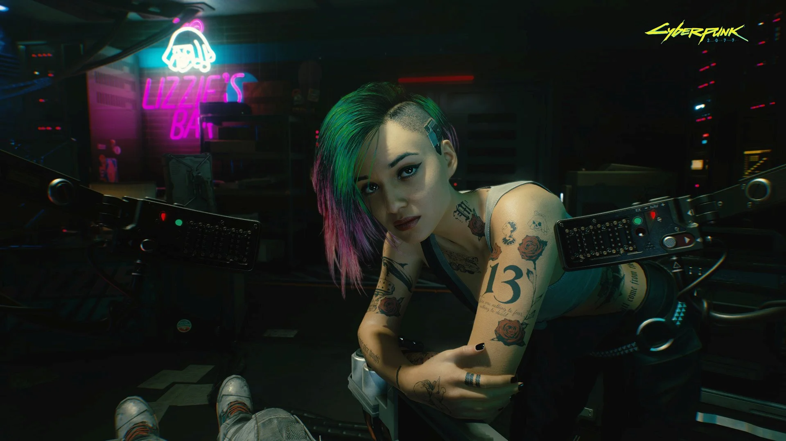

V (You)
V ist the Main Character of the Game.
At the start you decide how he or she should look in an editor.

Viktor "Vik" Vector
Vik is a skilled ripperdoc and a trusted friend of V.
He helps V with cyberware upgrades and provides valuable advice throughout the story.

Johnny Silverhand
Johnny Silverhand is a Rocker and a Legend in Night City.
He was once the lead singer of the band Samurai and a former soldier who fought against the corporations.
After his death, his digital ghost lives in your head, influencing your journey.

Rogue Amendiares
Rogue is one of the most influential Fixers in Night City.
In her past, she was a skilled solo and a close partner of Johnny Silverhand. Together, they took part in the legendary assault on Arasaka Tower.
She now runs the Afterlife bar and has a legendary reputation for getting things done.

Jackie Welles
Jackie is your best friend in the game.
He is a very loyal person and helps you with everything.

Misty Olszewski
Misty is the owner of Misty's Esoterica, a spiritual shop in Night City.
She is empathetic, supportive, and helps V through difficult times.
She is also Jackies Friend.

Panam Palmer
Panam is a Nomad and a member of the Aldecaldo family.
She is a very strong and independent

Judy Alvarez
Judy is a Braindance Editor and a member of the Mox.
She is a very smart and talented person.
